건설기계설비기사 (2007-05-13 기출문제)
1과목: 재료역학
1. 그림과 같은 압력계의 안전변에 지름 5cm의 방출구가 있고 스프링의 자유길이는 25cm이며, 스프링 상수는 6kN/m이다. 압력이 최소 얼마 이상일 때 이 변이 열리겠는가?
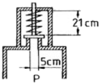
- 123kN/m2
- 103kN/m2
- 113kN/m2
- 133kN/m2
(정답률: 알수없음)

2. 어떤 재료의 탄성계수 E = 210 GPa이고 전단 탄성계수 G = 83GPa이라면 이 재료의 포아송 비는?
- 0.265
- 0.115
- 1,0
- 0.435
(정답률: 알수없음)
3. 두께 5mm의 연강판으로 2Mpa의 내압에 견디는 원통을 만들려고 한다. 허용응력이 60MPa이라면 안지름은 최대 몇 cm로 하면 되겠는가?
- 30
- 60
- 15
- 25
(정답률: 알수없음)
4. 지름 10cm인 연강봉(탄성계수 Es= 210 GPa)이 외경 11cm, 내경 10cm인 구리관(탄성계수 Ec= 150GPa)사이에 끼워져 있다. 양단에서 강체평판으로 10kN의 압축하중을 가할 때 연강봉과 구리관에 생기는 응력비
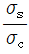
의 값은?- 5/6
- 5/7
- 6/5
- 7/5
(정답률: 알수없음)
5. 그림과 같은 직사각형 단면의 짧은 기둥에서 점 P에 압축력 100kN을 받고 있다. 단면에 발생하는 최대 압축응력은 몇 MPa인가?
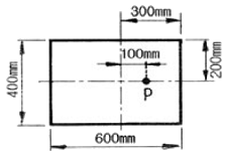
- 0.83
- 8.3
- 1.04
- 10.4
(정답률: 알수없음)
6. 탄성 한도내에서 인장 하중을 받는 막대에 발생하는 응력이 2배가 되면 단위 체적속에 저장되는 변형에너지는 몇 배가 되는가? (단, 탄성계수는 일정함)
- 1/2배
- 2배
- 1/4배
- 4배
(정답률: 알수없음)
7. 외팔보가 그림과 같이 등분포하중과 집중하중을 받고 있다.
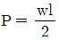
일 때 이 보의 전단력선도는?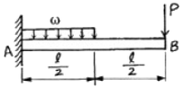
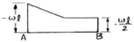
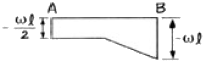
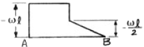
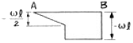
(정답률: 알수없음)
8. 그림과 같이 초기온도 20℃, 초기길이 19.95cm, 지름 5cm인 봉을 간격이 20cm인 두 벽면 사이에 넣고 봉의 온도를 220℃로 가열했을 때 봉에 발생되는 응력은 몇 MPa인가? (단, 봉의 선팽창계수 a=1.2×10-5/℃이고, 탄성계수 E = 210 GPa이다.)
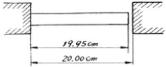
- 0
- 25.2
- 257
- 504
(정답률: 알수없음)
9. 단면의 2차 모멘트가 250 cm4인 I형강 보가 있다. 이 보의 높이가 20cm이고 굽힙모멘트 2500N·m을 받을 때 최대 굽힘응력은 몇 MPa인가?
- 50
- 100
- 200
- 400
(정답률: 알수없음)
10. 바깥지름 4cm, 안지름 2cm의 속이 빈 원형축에 10MPa의 최대 전단응력이 생기도록 하려면 비틀림 모멘트의 크기는 몇 N·m로 해야 하는가?
- 50
- 212
- 135
- 118
(정답률: 알수없음)
11. 지름 10mm, 길이 2m인 둥근 막대의 한끝을 고저하고 타단을 자유로이 10°만큼 비틀었다면 막대에 생기는 최대 전단응력은 몇 MPa인가? (단, 재료의 전단탄성계수 G = 84 GPa이다.)
- 18.3
- 36.6
- 54.7
- 73.2
(정답률: 알수없음)
12. 평면 응력상태에 있는 재료 내부에 서로 직각인 두 방향에서 수직 응력 σx, σy가 작용할 때 생기는 최대 주응력과 최소 주응력을 각각 σ1, σ2라 하면 다음 중 어느 관계식이 성립하는가?
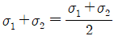
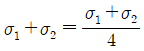
- σ1+σ2=σx+σy
- σ1+σ2=2(σx+σy)
(정답률: 알수없음)
13. 안지름 400mm, 내압 8MPa인 고압가스 용기의 뚜껑을 8개의 볼트로 같은 간격으로 조일 때 각 볼트의 지름은 최소 몇 mm로 해야 하는가? (단, 볼트의 허용 인장응력은 45MPa로 한다.)
- 20
- 40
- 60
- 80
(정답률: 알수없음)
14. 원형 단면보의 임의단면에 걸리는 전체 전단력이 V일 때, 단면의 중립 축 위에 생기는 최대 전단응력은?
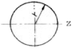
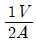
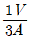
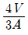
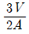
(정답률: 알수없음)
15. 그림과 같이 길이 3m, 단면적 500mm2인 재료의 윗부분이 고정되어 있고, 이것에 500N의 추를 200mm의 높이에서 낙하시켜 충격을 준다. 재료의 최대 신장량은 몇 mm인가? (단, 자중 및 마찰은 무시하고, 탄성계수는 210GPa이다.)
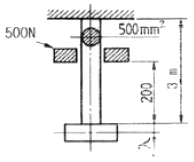
- 2.8
- 3.4
- 2.4
- 3.6
(정답률: 알수없음)
16. 다음 그림과 같이 집중하중을 받는 일단 고정, 타단 지지된 보에서 고정단에서의 모멘트는?
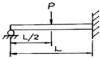
- 0
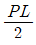
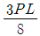
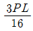
(정답률: 알수없음)
17. 보기와 같은 등분포 하중의 단순지지보에서 A의 보가 B의 보 보다 최대 처짐이 몇배나 되는가? (단, B 보의 등분포 하중은 A보의 2배이고, B보의 길이는 A보의 1/2이다.)
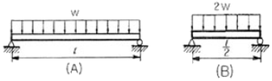
- 4
- 8
- 12
- 16
(정답률: 알수없음)
18. 반원 부재에 그림과 같이 R/2지점에 하중 P가 작용할 때 지지점 B에서의 반력은?
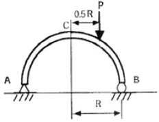
- P/4
- P/2
- 3P/4
- P
(정답률: 알수없음)
19. 길이가 L인 외팔보의 중앙에 집중하중 P가 작용할 때, 자유단 C에서의 최대 처짐은? (단, E는 탄성계수, I는 단면 2차 모멘트이다.)
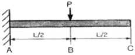
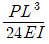
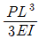
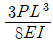
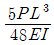
(정답률: 알수없음)
20. 주평면에 관한 설명으로 옳은 것은?
- 주평면에서 전단응력의 최대값은 주응력의 1/2이다.
- 주평면에는 전단응력은 작용하지 않고 수직응력만 작용한다.
- 주평면에는 수직응력과 전단응력의 합이 작용한다.
- 주평면에서 수직응력은 작용하지 않고 최대 전단응력만 작용한다.
(정답률: 알수없음)
2과목: 기계열역학
21. 어느 발명가가 바닷물로부터 매시간 1800kJ의 열량을 공급받아 0.5kW의 열기관을 만들었다고 주장한다면, 이 사실은 열역학 제 몇 법칙에 위반 되겠는가?
- 제 0법칙
- 제 1법칙
- 제 2법칙
- 제 3법칙
(정답률: 알수없음)
22. 포화액체와 포화증기의 구분이 없어지는 상태가 물의 경우 고온고압에서 나타난다. 이 상태를 무엇이라고 부르는가?
- 삼중점
- 포화점
- 임계점
- 비점
(정답률: 알수없음)
23. 대기압이 750mmHg이고, 보일러의 압력계가 12kgf/cm2로 제시하고 있을 경우, 이 압력을 절대압력으로 환산하면 약 몇 kgf/cm2인가?
- 10.02
- 13.02
- 20.04
- 25.06
(정답률: 알수없음)
24. 밀폐 시스템이 압력 P1=2 bar, 체적 V1=0.1m3인 상태에서 P2=1 bar, 체적 V2=0.3m3인 상태까지 가역 팽창 되었다. 이 과정이 P-V 선도에서 직선으로 표시된다면, 이 과정동안 시스템이 한 일은?
- 10kJ
- 20kJ
- 30kJ
- 40kJ
(정답률: 알수없음)
25. 압력이 106N/m2, 체적이 1m3인 공기가 압력이 일정한 상태에서 4×55J의 일을 하였다. 변화후의 체적은 약 얼마인가?
- 1.4m3
- 1.0m3
- 0.6m3
- 0.4m3
(정답률: 알수없음)
26. 두께 10mm, 열전도율 45kJ/mh℃인 강판의 두 면외 온도가 각각 300℃, 50℃일 때 전열 면 1m2당 1시간에 전달되는 열량은?
- 1125000 kJ
- 1425000 kJ
- 925000 kJ
- 1625000 kJ
(정답률: 알수없음)
27. 효율이 85%인 터빈에 들어갈 때의 증기의 엔탈피가 3390kJ/kg이고, 가역 단열과정에 의해 팽창할 경우에 출구에서의 엔탈피가 2135kJ/kg이 된다고 한다. 운동에너지의 변화를 무시할 경우 이 터빈의 실제 일은 몇 kJ/kg인가?
- 1476
- 1255
- 1067
- 906
(정답률: 알수없음)
28. 8℃의 완전가스로 가역단열압축하여 그 체적을 1/5로 하였을 때 가스의 온도는 몇 ℃로 되겠는가? (단, k = 1.4 이다.)
- -125℃
- 294℃
- 222℃
- 262℃
(정답률: 알수없음)
29. 어떤 냉장고에서 질량유량 80kg/hr의 냉매가 17kJ/kg의 엔탈피로 증발기에 들어가 엔탈피 36kJ/kg가 되어 나온다. 이 냉장고의 냉동능력은?
- 1220 kJ/hr
- 1800 kJ/hr
- 1520 kJ/hr
- 2000 kJ/hr
(정답률: 알수없음)
30. 어떤 냉매를 사용하는 냉동기의 P-h 선도가 다음과 같을 대 성능 계수는 약 얼마인가? (단, 이 냉매의 p-h 선도에서 h1 = 1638 kJ/kg, h2= 1983 kJ/kg, h3=h4 = 559kJ/kg 이다.)
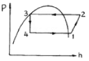
- 1.5
- 3.1
- 5.2
- 7.9
(정답률: 알수없음)
31. 500℃와 20℃의 두 열원 사이에 설치되는 열기관이 가질 수 있는 최대의 이른 열효율(%)은 약 얼마인가?
- 4%
- 38%
- 62%
- 96%
(정답률: 알수없음)
32. 오토사이클(Otto cycle)의 압축비 ε=8이라고 하면 이론 열효율은 약 몇 % 인가? (단, k = 1.4이다.)
- 36.8%
- 46.7%
- 56.5%
- 66.6%
(정답률: 알수없음)
33. 질량 1kg의 공기와 밀폐계에서 압력과 체적이 100kPa, 1m3이었는데 폴리트로픽 과정을 거쳐 체적이 0.5m3이 되었다. 최종 온도와 내부에너지의 변화량은 각각 얼마인가? (단, 공기의 R=287J/kg K, Cv=718J/kg K, Cp=100J/kg K, k=1.4, n=1.3이다.)
- T2=459.7K, △U=111.3 kJ
- T2=459.7K, △U= 79.9 kJ
- T2=428.9K, △U= 80.5 kJ
- T2=428.9K, △U= 57.8 kJ
(정답률: 알수없음)
34. 온도 5℃와 35℃사이에서 작동되는 냉동기의 최대 성능계수는?
- 10.3
- 5.3
- 7.3
- 9.3
(정답률: 알수없음)
35. 랭킨사이클의 열효율을 높이는 방법이 아닌 것은?
- 과열기를 설치하여 과열시킨다.
- 열공급 온도를 상승시킨다.
- 열 방출온도를 상승시킨다.
- 재열(reheat)한다.
(정답률: 알수없음)
36. 실제 기체가 이상기체에 가장 가까울 때는?
- 온도가 높고 압력이 낮을 때
- 온도가 낮고 압력이 낮을 때
- 온도가 높고 압력이 높을 때
- 온도가 낮고 압력이 높을 때
(정답률: 알수없음)
37. 어떤 시스템이 변화를 겪는 동안 주위의 엔트로피가 5 kJ/K 감소하였다. 시스템의 엔트로피 변화로 가능한 것은?
- 2 kJ/K 감소
- 5 kJ/K 감소
- 3 kJ/K 증가
- 6 kJ/K 증가
(정답률: 알수없음)
38. 증기 터빈으로 질량 유량 1kg/s, 엔탈피 h1=3500 kJ/kg의 수증기가 돌아온다. 중간 단에서 h2=3100kJ/kg의 수증기가 추출되며 나머지는 계속 팽창하여 h3=2500 kJ/kg 상태로 출구에서 나온다. 이때 열손실은 없으며, 위치 에너지 및 운동 에너지의 변화가 없다. 총 터빈 출력은 900kW이다. 중간 단에서 추출되는 수증기의 질량 유량은?
- 0.167 kg/s
- 0.323 kg/s
- 0.714 kg/s
- 0.886 kg/s
(정답률: 알수없음)
39. 다음 엔트로피에 관하 설명 중 맞는 것은?
- Clausius 방정식에 들어가는 온도값은 절대온도(K)와 섭씨온도(℃)를 모두 사용할 수 있다.
- 엔트로피는 경로에 따라 값이 다르다.
- 가역 과정의 열량은 h-s선도 상에서 과정 밑 부분의 면적과 같다.
- 관계식에서 엔트로피의 생성 항은 항상 양수이다.
(정답률: 알수없음)
40. 한여름 낮 주차된 차량의 내부 온도는 외부보다 높은 경우가 많다. 어떤 이유인가?
- 태양으로부터의 복사열로 인해서
- 대류 열전달이 활발하게 일어나기 때문에
- 복사에너지가 존재하지 않으므로
- 차량 내부에 자연대류가 생성되어서
(정답률: 알수없음)
3과목: 기계유체역학
41. 지름이 8mm인 중공 물방울의 내부 압력(게이지압력)은? (단, 물의 표면장력은 0.075 N/m이다.)
- 37.5 Pa
- 75 Pa
- 0.037 Pa
- 0.075 Pa
(정답률: 알수없음)
42. 그림과 같은 수문(bxh=3mx2m)이 있을 경우 합력의 작용점은 수면에서 몇 m깊이에 있는가?
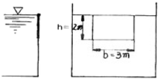
- 약 0.7m
- 약 1.1m
- 약 1.3m
- 약 1.5m
(정답률: 알수없음)
43. 이상 유체를 정의한 것 중 가장 옳은 것은?
- 실제 유체이다.
- 뉴턴 유체이다.
- 점성만 없는 유체이다.
- 점성이 없는 비압축성 유체이다.
(정답률: 알수없음)
44. 내경 30cm의 원관 속을 절대압력 0.32Mpa, 온도 27℃인 공기가 4kg/s로 흐를 때 이 원관속을 흐르는 공기의 평균 속도는? (단, 공기의 기체상수 R= 287 J/kg·K이다.)
- 약 15.2 m/s
- 약 20.3 m/s
- 약 25.2 m/s
- 약 32.5 m/s
(정답률: 알수없음)
45. 수평 원관 내에 물이 층류로 흐르고 있을 때 평균속도가 10m/s라면 최대속도는 몇 m/s인가?
- 10
- 15
- 20
- 40
(정답률: 알수없음)
46. 속도 3m/s로 움직이는 평판에 이것과 같은 방향으로 수직하게 10m/s의 속도를 가진 제트가 충돌한다. 분류가 평판에 미치는 힘 F는 얼마인가? (단, 유체의 밀도를 ρ라 하고 제트의 단면적을 A라 한다.)
- F = 10ρA
- F = 100ρA
- F = 7ρA
- F = 49ρA
(정답률: 알수없음)
47. 길이 100m, 속도 18m/s인 선박의 모형실험을 길이 5m인 모형선으로 프루드(Froude)상사가 성립되게 실험하려면 모형선의 속도는 몇 m/s로 해야 하는가?
- 1.80
- 4.02
- 0.36
- 36
(정답률: 알수없음)
48. 어떤 기름의 동점성계수가 2.5stokes이고, 비중은 2.45dlek. 점성 계수는 몇 N·s/m2인가? (단, 1stoke = 1cm2/s이다.)
- 6.125
- 0.6125
- 0.001
- 0.01
(정답률: 알수없음)
49. 다음 중 유량을 측정하기 위한 것이 아닌 것은?
- 오리피스(orifice)
- 위어(weir)
- 벤튜리미터(venturi meter)
- 피에조미터(piezo meter)
(정답률: 알수없음)
50. 안지름이 10cm인 매끈한 관을 통하여 40℃의 물이 흐르고 있다. 이 관내의 유속이 0.01273m/s일 때 400m길이에서 손실수두를 계산한 것은? (단, 40℃의 물의 동점성계수는 0.658×10-6m2/s이다.)
- 0.50×10-3m
- 1.09×10-3m
- 4.26×10-3m
- 5.08×10-3m
(정답률: 알수없음)
51. 부차적 손실계수 값이 5인 밸브를 Darcy의 관마찰계수가 0.025이고 지름이 2cm인 관으로 환산한다면 관의 등가길이는 몇m인가?
- 4
- 0.4
- 2.5
- 0.25
(정답률: 알수없음)
52. 안지름이 20mm인 수평으로 놓인 곧은 파이프 속에 점성계수 0.4N·s/m2, 밀도 900kg/m3인 기름이 유량 2×10-5m3/s로 흐르고 있을 때, 파이프 내의 10m 떨어진 두 지점간의 압력강하는 몇 kPa인가?
- 10.2
- 20.4
- 30.6
- 40.8
(정답률: 알수없음)
53. 다음 체적탄성계수에 대한 설명 중 틀린 것은?
- 체적탄성계수가 크다는 것은 어떤 체적을 압축하는 데 큰 압력이 필요하다는 뜻이다.
- 체적탄성계수의 차원은 Pa이다.
- 체적탄성계수가 동일할 때, 밀도가 큰 액체 속에서의 음속이 더 크다.
- 밀도가 동일할 때, 체적탄성계수가 큰 액체 속에서의 음속이 더 크다.
(정답률: 알수없음)
54. 직경이 10cm 인 수평 원관으로 3km 떨어진 곳에 원유(점성계수 μ=0.02 Pa·s, 비중 s=0.86)를 0.2m3/min의 유량으로 수송하기 위해서 필요한 동력은 몇 W인가?
- 127
- 271
- 712
- 1270
(정답률: 알수없음)
55. 다음 중 무차원수가 되는 것은? (단, ρ:밀도, μ:점성계수, F:힘, Q;유량, V:속도)
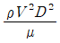
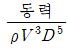
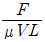
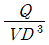
(정답률: 알수없음)
56. 다음과 같은 수평으로 놓인 노즐이 있다. 노즐의 입구는 면적이 0.1m2이고 출구의 면적은 0.02m2이다. 정상, 비압축성이며 점성의 영향이 없다면 출구의 속도가 50m/s일 때 입구와 출구의 압력차(P1-P2)는 몇 kPa/m3인가?
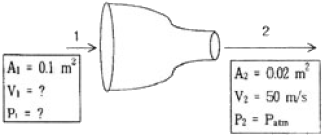
- 1.48
- 14.8
- 2.96
- 29.6
(정답률: 알수없음)
57. 점성계수가 0.25 kg/(m·s)인 유체가 지면과 수평으로 놓인 평판 위를 흐른다. 평판 근방의 속도 분포가 u=5.0-100(0.3-y)2일 때 평판에서의 전단응력은? (단, y(m)는 평판면에서 수직방향의 좌표이고, u(m/s)는 평판 근방에서 유체가 흐르는 방향의 속도이다.)
- 3 Pa
- 30 Pa
- 1.5 Pa
- 15 Pa
(정답률: 알수없음)
58. 지름 20cm인 구의 주위에 밀도가 1000kg/m3, 점성계수는 1.8×10-3Pa·s인 물이 2m/s의 속도로 흐르고 있다. 항력계수가 0.2인 경우 구에 작용하는 항력은 약 몇 N인가?
- 12.6
- 200
- 0.2
- 25.12
(정답률: 알수없음)
59. 바닷속 100m까지 잠수한 잠수함이 받는 압력은 몇 kPa인가? (단, 바닷물의 비중은 1.03이다.)
- 101
- 404
- 1010
- 4040
(정답률: 알수없음)
60. 밀도가 800kg/m3인 원통형 물체가 그림과 같이 1/3이 수면 위로 떠있는 것이 관측되었다. 이 액체의 비중은?
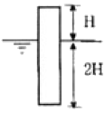
- 0.2
- 0.67
- 1.2
- 1.5
(정답률: 알수없음)
4과목: 유체기계 및 유압기기
61. 석유계 연료 중 증류온도가 가장 낮고 발열량이 가장 높은 것은?
- 등유
- 경유
- 가솔린
- 중유
(정답률: 알수없음)
62. 가솔린 기관의 성능에 영향을 미치는 중요한 인자가 아닌 것은?
- 흡입관의 압력
- 배압
- 압축비
- 연료의 비중량
(정답률: 알수없음)
63. 행정 체적이 1750cc이고, 실린더 체적이 2000cc인 가솔린 기관의 압축비는?
- 9
- 8
- 7
- 2
(정답률: 알수없음)
64. 디젤기관의 연소에 있어서 다른 조건이 모두 같을 때 지연기간(delay period)이 길면 급격 연소기간 중의 압력 상승률은?
- 압력상승률이 작아진다.
- 압력상승률은 변화하지 않는다.
- 압력상승률이 커진다.
- 압력상승률이 커질 때도 있고, 작아질 때도 있다.
(정답률: 알수없음)
65. 기관에 가해지는 부하에 변동이 생겨도 이것에 대응하는 연료의 양을 가감하여 기관의 회전속도를 항상 소정의 속도로 유지하기 위한 장치는?
- 흡·배기 밸즈
- 피스톤밸브
- 딜리버리밸브
- 조속기
(정답률: 알수없음)
66. 크랭크 축의 평형추 역할 중 가장 적합한 것은?
- 오일을 공급하기 위한 것이다.
- 크랭크 축의 강도를 높인다.
- 회전을 일정하게 한다.
- 회전력을 증대시킨다.
(정답률: 알수없음)
67. 자동차용 고속 디젤기관을 가솔린기관과 비교했을 때의 장점은?
- 일산화탄소(CO)와 탄화수소(HC)의 배출량이 많다.
- 압축비를 크게 할 수 있으며 열효율이 좋다.
- 연료소비율이 높다.
- 무게가 무거워 토크 변동이 크다.
(정답률: 알수없음)
68. 로터리 기관의 압축비 ε을 구하는 식으로 맞는 것은? (단, Vmax는 작동실 최대체적, Vmin은 최소체적, △V는 로터리 오목부의 체적이다.)
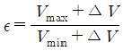
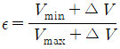
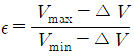
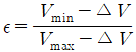
(정답률: 알수없음)
69. 3000rpm에서 50cc의 연료를 소비하는데 25초 소요되는 기관의 연료소비율이 200g/PS·h이다. 이 기관의 토크는? (단, 연료의 비중은 0.75이다.)
- 3.2kgf·m
- 4.8kgf·m
- 6.4kgf·m
- 8.0kgf·m
(정답률: 알수없음)
70. 4 행정 사이클 기관과 비교한 2 행정 사이클 기관의 단점이 아닌 것은?
- 소기과정 중의 배출로 인해 연료소비율이 높다.
- 윤활유가 배기와 혼합되므로 윤활유의 소비량이 많다.
- 원심식 또는 회전식 소기펌프의 작동으로 배기압이 높고 소음이 크다.
- 밸브장치의 구조상 역전이 어렵다.
(정답률: 알수없음)
71. 토출압력이 70kgf/cm2, 토출량은 50L/min인 유압펌프용 모터의 1분간 회전수는 얼마인가? (단, 펌프 1회전당 유량은 Qn= 20cc/rev이며, 효율은 100%로 가정한다.)
- 1250
- 1750
- 2250
- 2500
(정답률: 알수없음)
72. KS 유압 및 공기압 용어 중 전자석에 의한 조작 방식은?
- 인력 조작
- 기계적 조작
- 파일럿 조작
- 솔레노이드 조작
(정답률: 알수없음)
73. 다음 보기와 같은 유압기호가 나타내는 것은 무엇인가?
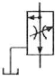
- 가변 교축 밸브
- 무부하 릴리프 밸브
- 직렬형 유량조정 밸브
- 바이패스형 유량조정 밸브
(정답률: 알수없음)
74. 다음 중 유압 작동유의 구비 조건이 아닌 것은?
- 운전온도 범위에서 적절한 점도를 유지할 것
- 연속 사용해도 화학적, 물리적 성질의 변화가 적을 것
- 녹이나 부식 발생을 방지할 수 있을 것
- 동력을 확실히 전달하기 위해서 압축성일 것
(정답률: 알수없음)
75. 다음 보기의 회로는 A,B 두 실린더를 순차적으로 작동이 헹하여지는 회로이다. 무슨 회로인가?
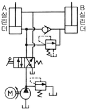
- 먼로더 회로
- 디컴프레션 회로
- 시퀜스 회로
- 카운터 밸런스 회로
(정답률: 알수없음)
76. 다음 중 유량조절밸브에 의한 속도 제어회로를 나타낸 것이 아닌 것은?
- 미터 인 회로
- 블리드 오프 회로
- 미터 아웃 회로
- 카운터 회로
(정답률: 알수없음)
77. 유압 잭(jack)은 다음 중 어느 것을 이용한 것인가?
- 베르누이 정리
- 보일 샬의 법칙
- 레이놀즈의 이론
- 파스칼의 원리
(정답률: 알수없음)
78. 다음 중 유압장치의 단점인 것은?
- 작은 힘으로 큰 힘을 얻을 수 있다.
- 회전 운동과 직선 운동이 자유로우며 원격조작이 가능하다.
- 유량을 조절하여 무단 변속운전을 할 수 있다.
- 유압유는 온도의 영향을 받기 쉽다.
(정답률: 알수없음)
79. 유압 장치의 배관, 밸브, 계기류 등을 급격한 서지압으로부터 보호하기 위하여 설치하는 것은?
- 디퓨저
- 엑셀레이터
- 엑추에이터
- 어큐물레이터
(정답률: 알수없음)
80. 보기와 같은 공유압 기호가 나타내는 것은 무엇인가?
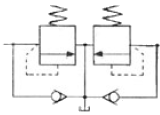
- 파일럿 작동형 시퀀스 밸브
- 카운터 밸런스 밸브
- 무부하 릴리프 밸브
- 브레이크 밸브
(정답률: 알수없음)
5과목: 건설기계일반 및 플랜트배관
81. 선반 작업을 할 때 쓰이는 공구 또는 부속 장치가 아닌 것은?
- 돌리개
- 맨드릴
- 센터드릴
- 아버
(정답률: 알수없음)
82. 가스용접에서 산소와 아세틸렌의 혼합량에 따라 여러 종류의 화염이 생긴다. 이 중 틀린 것은?
- 탄화성 화염
- 산화성 화염
- 융화성 화염
- 중성 화염
(정답률: 알수없음)
83. 지름 91mm의 강봉을 회전수 700rpm으로 선삭하는데 절삭 저항의 주분력이 75kgf이다. 이 때의 기계적 효율이 80%이라고 하면 여기에 공급되어야 할 동력은 몇 PS인가?
- 약 2.56
- 약 4.17
- 약 6.56
- 약 8.17
(정답률: 알수없음)
84. 피측정물을 확대 관측하여 복잡한 모양의 윤곽, 좌표의 측정, 나사 요소의 측정 등과 같이 단독 요소의 측정기로는 측정할 수 없는 부분을 측정할 때 가장 적합한 것은?
- 피치 게이지
- 나사 마이크로 미터
- 공구 현미경
- 센터 게이지
(정답률: 알수없음)
85. 주조에서 도가니로의 규격으로 옳은 것은?
- 1시간에 용해할 수 있는 구리의 중량으로 표시한다.
- 1회에 용해할 수 있는 구리의 중량으로 표시한다.
- 1시간에 용해할 수 있는 주철의 중량으로 표시한다.
- 1회에 용해할 수 있는 주철의 중량으로 표시한다.
(정답률: 알수없음)
86. 프레스를 이용한 단조에서 유효 단조 면적이 150cm2, 가고 재료의 변형저항이 20kgf/mm2 기계효율을 80%로 하면 프레스의 용량(ton)은?
- 37500
- 3750
- 37.5
- 375
(정답률: 알수없음)
87. 다이에 아연, 납, 주석 등의 연질금속을 넣고 펀치에 타격을 가하여 길이가 짧은 치약튜브, 약품튜브 등을 제작하는 압출은?
- 직접 압출
- 간접 압출
- 열간 압출
- 충격 압출
(정답률: 알수없음)
88. Ms점 이하인 100℃~200℃에서 항온 유지한 후에 공랭하는 열처리로서 오스테나이트에서 마텐자이트와 베이나이트의 혼합조직을 얻는 열처리 방법을 무엇이라 하는가?
- 오스템퍼링(austempering)
- 마템퍼링(martempering)
- 타임 퀜칭(time quenching)
- 마퀜칭(marquenching)
(정답률: 알수없음)
89. 입도가 작고 연한 숫돌을 작은 압력으로 공작물 표면에 가압하면서 공작물에 이송을 n고 또 숫돌을 좌우로 진동시키면서 가공하는 방법은?
- 래핑(Lapping)
- 호닝(Honing)
- 숏 피닝(Shot peening)
- 슈퍼 피니싱(Super finishing)
(정답률: 알수없음)
90. 사인바(sine bar)에 대한 설명 중 틀린 것은?
- 45°각도초과를 측정할 때, 오차가 급격히 커진다.
- 사인바는 삼각함수를 이용하여 각도측정을 한다.
- 하이트 게이지와 함께 사용해 오차를 보정할 수 있다.
- 호칭은 양 롤러간이 중심거리로 나타낸다.
(정답률: 알수없음)
91. 골재공급장치, 건조가열장치, 믹서 및 아스팔트공급장치 등이 일조 또는 수조로 되어 있는 아스팔트 믹싱 플랜트(asphalt mixing plant)의 규격으로 옳은 것은?
- 아스팔트 콘크리트의 시간당 생산능력(m3/hr)
- 포설할 수 있는 표준 포장 너비(m)
- 아스팔트 탱크의 용량(L)
- 혼합 또는 교반의 1회 작업 능력(m3)
(정답률: 알수없음)
92. 아스팔트 혼합재를 노반 위에 소정의 포장 폭으로 균일하게 깔고, 규정의 두께로 포장하는 작업 기계는?
- 로우더
- 아스팔트 피니셔
- 지게차
- 아스팔트 분배기
(정답률: 알수없음)
93. 자주식 로우드 롤러(road roller)를 축과 바퀴의 배열에 따라 분류할 때 일반적인 종류가 아닌 것은?
- 1축 1륜
- 2축 2륜
- 2축 3륜
- 3축 3륜
(정답률: 알수없음)
94. 회전식 공기 압축기의 설명으로 틀린 것은?
- 공기의 흐름이 원활하게 되어 큰 공기 탱크가 필요없다.
- 왕복식에 비하여 고속이 가능하다.
- 기동 토크가 작아 클러치가 필요없다.
- 배출 공기의 온도가 왕복식보다 높다.
(정답률: 알수없음)
95. 모우터 그레이더의 규격 표시로 가장 적합한 것은?
- 스케리 파이어(Scarifier)의 발톱(teeth) 수로 나타낸다.
- 엔진정격 마력을 HP로 나타낸다.
- 표준 배토판의 길이(m)로 나타낸다.
- 전륜간 거리로 나타낸다.
(정답률: 알수없음)
96. 크레인 붐에 부속장치를 붙이고 드롭 해머나 디젤해머 등을 사용하여 말뚝박기 작업에 이용되는 것은?
- 콘크릿 버킷(concrete bucket)
- 파일 드라이버(pile driver)
- 마그넷(magnet)
- 어드 드릴(earth drill)
(정답률: 알수없음)
97. 도우저의 작업장치별 분류에서 나무 뿌리 뽑기, 잡목 등을 제거하며 굳은 땅 파헤치기, 암석 제거 등에도 쓰이는 것은?
- 트리밍 블레이드(trimming blade)
- 푸시 블레이드(push blade)
- 스노우 블레이드(snow blade)
- 레이크 블레이드(rake blade)
(정답률: 알수없음)
98. 모우터그레이더의 주행동력 전달순서로 가장 적합한 것은?
- 엔진(기관) → 클러치 → 변속기 → 감속기어 → 피니언 베벨기어 → 탠덤 드라이브 → 휠
- 엔진(기관) → 클러치 → 변속기 → 피니언 베벨기어 → 감속기어→ 탠덤 드라이브 → 휠
- 엔진(기관) → 클러치 → 변속기 → 감속기어→ 탠덤 드라이브 → 피니언 베벨기어 → 휠
- 엔진(기관) → 클러치 → 피니언 베벨기어 → 변속기 → 감속기어→ 탠덤 드라이브 →휠
(정답률: 알수없음)
99. 0.5m3 파우어 셔블 1대와 5ton 펌프 트럭을 조합시켜 굴착 운반을 하는 공사에서, 디퍼의 공칭 용량 q=0.6m3, 디퍼 계수 k=0.7, 토량환산계수 f=0.9, 작업 효율 E=0.8, 사이클 타임 Cm=30초 일 때, 파우어 셔블의 시간당 이론 작업량은 몇 m3/hr정도인가?
- 12.2
- 36.3
- 47.1
- 59.5
(정답률: 알수없음)
100. 로우더의 규격 표시 방법으로 가장 적합한 것은?
- 표쥰 버킷의 자체중량(ton)
- 리프팅 무게(ton)
- 표준 버킷의 산적용적(m3)
- 블레이드 길이(m)
(정답률: 알수없음)
최소 압력 = (스프링 상수) × (스프링의 압축량)
스프링의 압축량 = (스프링의 길이) - (스프링의 자유길이)
스프링의 길이 = (방출구에서 변의 끝까지의 거리) + (스프링의 자유길이)
방출구에서 변의 끝까지의 거리 = 10cm
스프링의 길이 = 10cm + 25cm = 35cm
스프링의 압축량 = 35cm - 25cm = 10cm = 0.1m
최소 압력 = (6kN/m) × (0.1m) / (5cm2) = 120kN/m2
따라서, 변이 열리기 위한 최소 압력은 123kN/m2 이다.